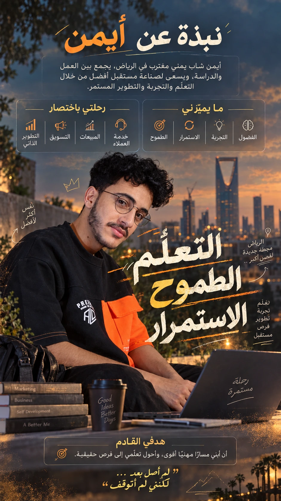
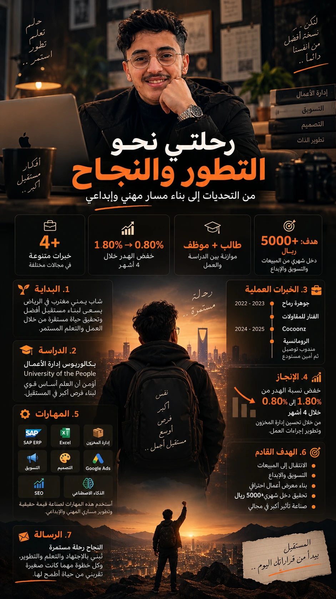
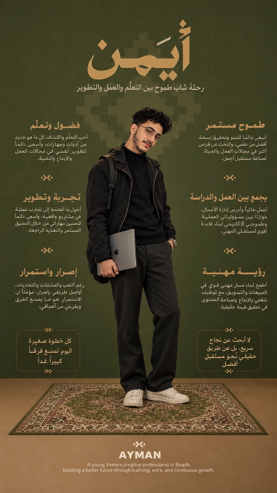

AYMAN AL HUSSAMتصميم إعلاني · هوية بصرية · تسويق رقمي
COCOONZمشاهد إعلانية سينمائية
AYWISEهوية عطر تصوّرية
ستّ هوياتشعارات خطّية عربية
في هذا العدد
الفهرس
اضغط أي عمل لتكبيره، واسحب زاوية الصفحة أو استخدم الأسهم للتقليب.
افتتاحية
لم أصل بعد… لكنني لم أتوقف
أيمن الحسّام — حيث يلتقي الشغف بالحرفة.
من الرياض، أبني مساري خطوة بخطوة بين التصميم والتسويق وإدارة الأعمال؛ من مشهد إعلاني لمرتبة تتنفس الطبيعة، إلى هوية عطر يحكي ذاكرة الغابة، إلى ستّ شعارات خطّية وُلدت من الحرف العربي.
كل مشروع محطة، وكل تصميم شهادة على أن التعلّم المستمر هو أثمن مهارة.
أيمن الحسّام · الرياض

٠١ · التعريف الشخصينبذة بصرية شخصية
٠١ — التعريف الشخصي
النبذة
شاب يمني مقيم في الرياض، يجمع بين العمل والدراسة، ويسعى لصناعة مستقبل أفضل من خلال التعلّم والتجربة والتطوير المستمر.
مجالات الخبرة
التصميم الجرافيكي والإعلانات البصرية
التسويق الرقمي وإدارة المتاجر الإلكترونية
الهوية البصرية وتصميم الشعارات
كتابة المحتوى التسويقي وتحسين محركات البحث
إعلانات Google Ads وإدارة الحملات
التعليم
بكالوريوس إدارة الأعمال — University of the People، موازنةً بين الدراسة والعمل.
ما يميزني
الفضولالتجربةالاستمرارالطموح

٠١ · التعريف الشخصيرحلتي نحو التطور والنجاح

٠١ · التعريف الشخصيالطموح المستمر — قصة شخصية
٠٢ — مفهوم إعلاني مستقل
COCOONZ
YOUR COMFORT IS HERE
راحة تفوق التوقعات
تحويل المرتبة إلى بطلة مشهد طبيعي سينمائي: شلالات، وغابات بامبو، وواحات أكسجين فوق الغيوم، لربط راحة النوم بالقوة الطبيعية.
مرتبة بامبو — قوة طبيعية لنوم أعمققوة طبيعية تحتضن الراحةتنفّس عمق الراحة
مادة طبيعية صديقة للبيئة
دعم قوي للعمود الفقري
تهوية مثالية
توازن درجة الحرارة
اتجاه فني · دمج صور · نصوص تسويقية عربية. عمل إبداعي مستقل بمساعدة الذكاء الاصطناعي، وليس حملة صادرة عن العلامة.